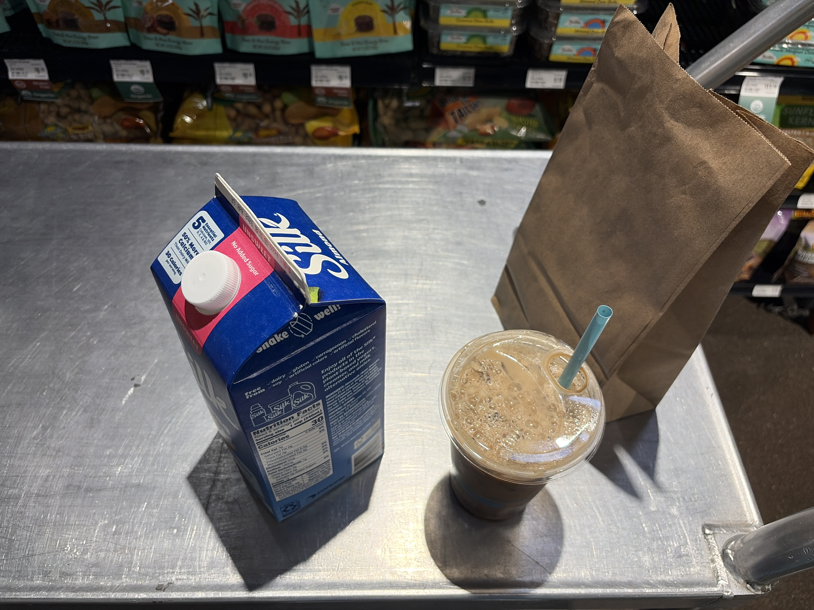
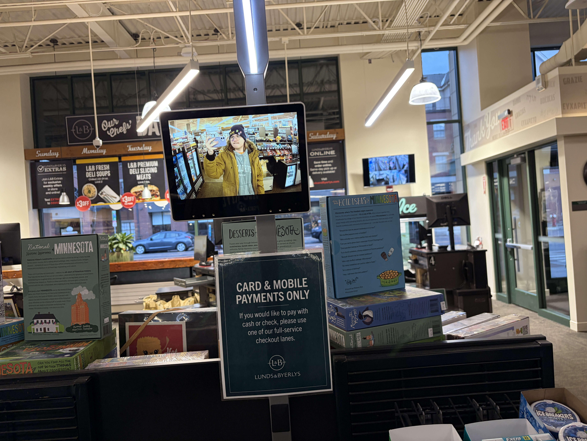
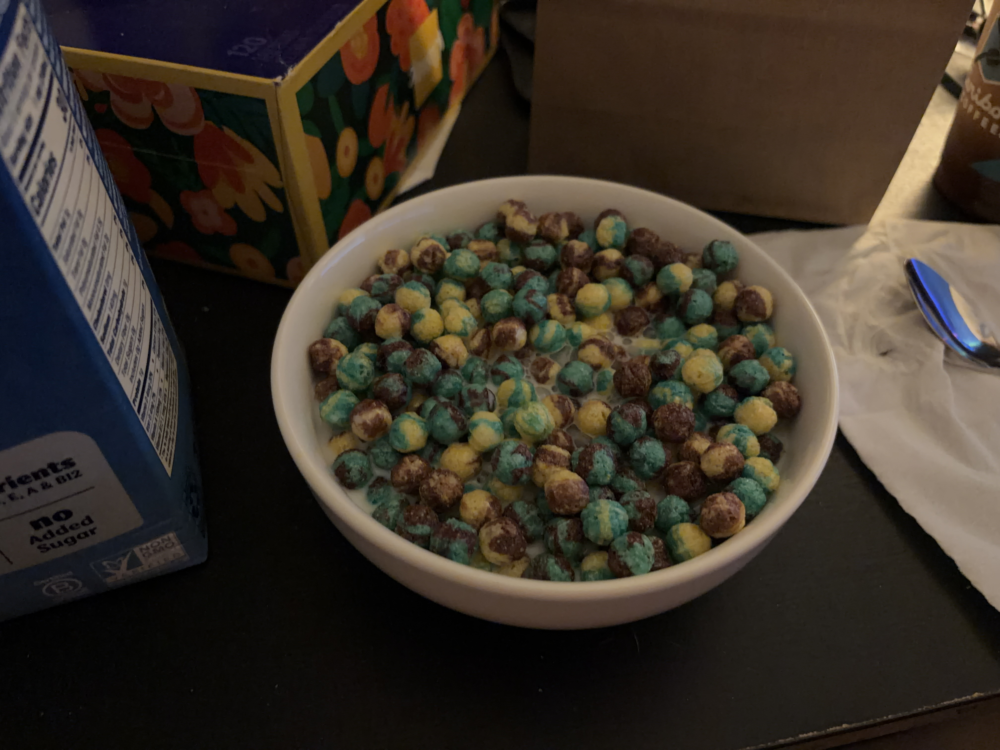

My review of the Blue Raspberry Trix that were released for the The Super Mario Galaxy Movie marketing campaign. Will not be seeing the movie, it looks to be terrible from trailers.


Getting milk at Lunds & Byerlys because I forgot to at Walmart.
So this is crazy
But it just tastes like Captain Crunch
With like
Gross accessory blue raspberry flavoring
Like sparkling on the edge of the flavor profile
Is it good? Kinda, yeah
Not the worst thing in the world
I think it's literally just Blue Raspberry Trix though
Okay I'm doing research and Blue Raspberry Trix might not have existed before this
Whatever the case, the unfortunate reality is that this evokes Captain Crunch but is not as good as Captain Crunch
And I'd rather have Captain Crunch
Still finishing it though. And having seconds.
How does the milk taste? Identical to almond milk
Cuz it's almond milk
#woke
My tummy kinda hurts

The extremely appealing-looking bowl 🥣.